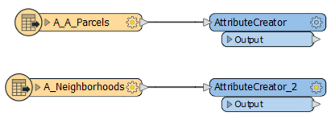
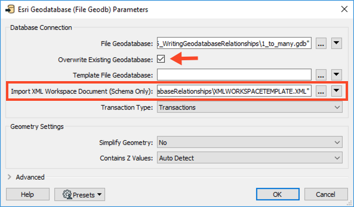
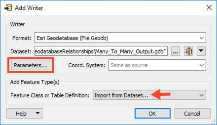
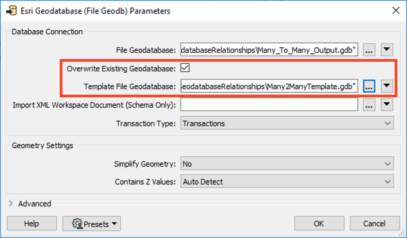

After completing this unit, you’ll be able to:
This article contains several examples of writing geodatabase relationship classes. It includes demos for concepts covered in the previous unit, Working with Geodatabase Relationship Classes. Examples cover 1:M relationships, inserting into a M:N M:N or attributed relationships, and advanced M:N relationships.
For the following examples, it is assumed that the relationships have already been created in ArcGIS. This is required, as FME cannot create the relationships, but merely populate them.
This unit's exercise uses the Esri Geodatabase (File Geodb) reader/writer, which requires a licensed version of ArcGIS. For more information on required ArcGIS license levels, please see Required ArcGIS License Types for FME Geodatabase Formats.
As mentioned in the previous unit, when dealing with a relationship class that is centered around a 1:M category, there is no intermediate table to keep track of these relationships. As such the relationships are bound to each other through the primary and foreign keys.
1. Open FME Workbench
Open FME Workbench (2021.1 or later) and start a blank workspace. Add an Esri Geodatabase (File Geodb) reader to the canvas and browse to the 1ManyRelationshipStart.gdb. There are no additional parameters to set for this reader, so click OK.
In the Select Feature Types dialog, select both feature classes (A_A_Parcels and A_Neighborhoods) and click OK.
2. Create geodb_feature_has_relationships Attribute
Add an AttributeCreator to the canvas and connect it to the A_A_Parcels reader feature type. In the parameters, create a new attribute called geodb_feature_has_relationships with the value to yes. Next, create another attribute called geodb_oid and set it to the attribute OBJECTID, then click OK.

Duplicate the AttributeCreator (ctrl-d or ⌘-d) and connect it to the A_Neighborhoods reader feature type.

3. Write to Geodatabase
Add an Esri File Geodatabase (File Geodb) writer to the canvas and select a folder to save the output to. For this example, we named the geodatabase 1_to_many.gdb. Set the Feature Class or Table Definition to Import from Dataset, then open the Parameters.

In the Parameters, enable Overwrite Existing Geodatabase, then for Import XML Workspace Document (Schema Only) browse to the XMLWORKSPACETEMPLATE.XML. Click OK twice to add the writer.

Now in the Import Writer Feature Types dialog, change the format to Esri Geodatabase (XML Workspace Document) then browse to the XMLWORKSPAPCETEMPLATE.XML.

In the Select Feature Types dialog, select both the feature types and click OK.
Connect the writer feature types to their corresponding AttributeCreators.
4. Save and Run the Workspace.
Save the workspace, then run it. Open the geodatabase in ArcCatalog, you should be able to see which features are related. Here is an example for ParcelID: 144. It is related to the Kitsilano Neighborhood.

Sometimes, the data in the origin and destination feature classes already exists and you just want to add the relationships to the relationship table. You can do this if:
To add the relationships, set the geodb_type to geodb_relationship or geodb_attributed relationship (if attributed) and the geodb_rel_origin_oid and geodb_rel_destination_oid to their respective OBJECTIDs. This does require that FME reads the feature classes which participate in the relationship but does not involve writing them out again. Only the relationship table needs to be written to in this case.
1. Review Geodatabase in ArcGIS
Before we create the relationship in FME, let’s review the structure of the data in ArcCatalog. Open Esri ArcCatalog, and navigate to the Many2ManyInput.gdb file contained with the Resources zip file. This will be the same geodatabase that we will use in FME.
From looking at the geodatabase we can see two tables (Structure and ADDRESS) as well as a relationship class (Structure_to_Address_rel).
Here you can see that the relationship class has already been created. The view can be accessed through ArcGIS and opening the properties of the relationship class. Right-click the Structure_to_Address_rel relationship class > Properties. As a reminder, this is because relationship classes must be created in ArcGIS and then they can be populated through FME.
2. Add Geodatabase to FME Workbench
Now that we’ve inspected our geodatabase in ArcGIS and know the relationship we are working with, we can move to FME Workbench. Open a blank workspace in FME Workbench (2021.1 or later). Add an Esri Geodatabase (File Geodb) reader to the canvas and browse to the Many2ManyInput.gdb dataset, then click OK.
In the Select Feature Types dialog, select only ADDRESS and Structure, then click OK.

3. Modify Attributes to Reflect Relationship Class
Because this is a M:N relationship, we need to ensure a few attributes are stored on features to be written to the relationship class.
geodb_rel_origin_oid : the ID attribute to be used from the related origin feature.geodb_rel_destination_oid : the ID attribute to be used from the related destination feature.geodb_type : either geodb_relationship or geodb_attributed_relationship.The Origin and Destination oid, refer to the primary and foreign keys on the respective feature classes. In this example, we used the ObjectID as the value for the newly created origin/destination oid.
Add an AttributeCreator to the canvas and connect it to the ADDRESS reader feature type. In the parameters, create a new attribute called geodb_rel_destination_oid with the Value of OBJECTID.
Add another AttributeCreator to the canvas and connect it to the Structure reader feature type. In the parameters, create a new attribute called geodb_rel_origin_oid with the Value of OBJECTID.
4. Merge Features
With the primary and foreign keys set, we can now merge the features using the FeatureJoiner. This will merge the features using the field that is shared between the two feature classes, in this case, Structure's SITEID and Address's REMARKS.
Add a FeatureJoiner to the canvas and connect the ADDRESS AttributeCreator to the Left input port, and the Structure AttributeCreator_2 to the Right input port. In the parameters, set the Join On Left to REMARKS and the Right to SITEID, then click OK.
5. Set Feature Class
Lastly, another AttributeCreator transformer is required to ensure that the features are recognized as a feature class. This is done by setting the geodb_type as geodb_relationship, if you were dealing with an attributed relationship, the value would need to be set to geodb_attributed_relationship.
Add an AttributeCreator to the canvas and connect it to the Joined output port on the FeatureJoiner. In the parameters, create a new attribute called geodb_type and set the Value to geodb_relationship, then click OK.
6. Write out to File Geodatabase
Finally, we can write out to a geodatabase. Add an Esri Geodatabase (File Geodb) writer to the canvas and browse to a location to save the geodatabase. Change the Feature Class or Table Definition to Import from Database and then open the Parameters.

In the Parameters, enable Overwrite Existing Geodatabase and then for Template File Geodatabase browse to the Many2ManyTemplate.gbd dataset. Click OK twice to add the writer.

In the Import Writer Feature Types dialog, browse to the Many2ManyTemplate.gdb, then click OK.
Then in the Select Feature Types dialog, only select Structure_to_Address_rel, and click OK.
Once the Structure_to_Address_rel writer feature type has been added, connect it to the AttributeCreator_3.
At this stage of the workspace, we are writing directly to the relationship table. In order to do this correctly, the values we set earlier are required:
geodb_rel_origin_oidgeodb_rel_destination_oidgeodb_typeWe do not have to set the Foreign Key values (StructureEventID and AddressEventID) because these will be populated by the writer as long as the above values have been mapped accordingly.
7. Save and Run the Workspace
Save and then run the workspace. The Relationship class should now be populated with the Foreign key values for AddressEventID and StructureEventId. View your output in ArcGIS.
In the M:N example above, the data already existed and we were just populating the relationship table to create the relation between the addresses and structures.
If you are inserting the data into a new geodatabase with a relationship class, a combination of the 1:M relationship workspace and updating a M:N relationship workspace are required to carry this task out. Again, it should be noted that the relationship class needs to be created in the destination geodatabase (or geodatabase template) prior to translation, via ArcGIS. An example of such a workspace can be seen in the Many2ManyAdvanced template (see the Resources section above).